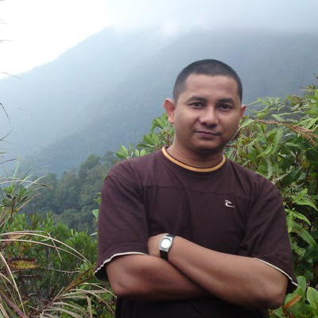

Data pipelines
Batch and streaming pipelines that are observable, idempotent and dull in the best way. dbt, Airflow and SQL at the core.
Data Engineer at Mindvalley
I build the data platforms and pipelines that make information trustworthy — mostly on Google Cloud, mostly out of sight. The rest of the time I’m helping Sabah’s developer and maker communities grow.

01 About
For more than fifteen years I’ve been building software, designing systems and teaching people to make things — long enough to prefer boring reliability over clever fragility.
I’m a data engineer at Mindvalley, where I design and operate the pipelines and cloud infrastructure that turn raw data into something teams can actually trust.
My centre of gravity is Google Cloud — GKE, Cloud SQL and Terraform — supported by dbt, Airflow and a lot of careful SQL. I like systems that are observable, reproducible, and documented well enough that the next person doesn’t have to guess.
Outside of work I’m a co-founder of Kinabalu Coders, the Sabah Programmers and ICT Builders Association, and of RoboNeo, the state’s open-category robotics competition. I’ve helped lead Raspberry Jams, open-source meetups and maker spaces across Sabah for over a decade.
Building for the cloud, rooted in Borneo.
02 Expertise
A blend of hands-on engineering, systems thinking and community building — usually all in the same week.
Batch and streaming pipelines that are observable, idempotent and dull in the best way. dbt, Airflow and SQL at the core.
GCP by default: GKE, Cloud SQL and Terraform-managed environments that can be rebuilt without drama.
Fifteen years of designing systems and APIs — from Clojure and Elixir experiments to production data platforms.
Co-founder of Kinabalu Coders, supporting open developer and maker communities across Sabah since 2014.
Co-founder of RoboNeo and a long-time advocate for Arduino, Raspberry Pi and hands-on STEM learning.
ICT training and community workshops — helping people move from curious to capable, one project at a time.
03 Selected work
A sample of public repositories — data plumbing, developer tools, functional-language experiments and robots. More on GitHub.
A personal AI assistant that runs on any OS and any platform — built around the idea that your assistant should belong to you.
View repository Data engineeringA containerised Apache Airflow deployment for af.dawillah.com — reproducible orchestration for real data workflows.
View repository Analytics engineeringA working space for the dbt quickstart — modelling, testing and documenting analytical data with SQL.
View repository Elixir libraryAn Elixir client library for Auth0 — authentication primitives for Elixir applications, shared with the community.
View repository Clojure experimentA task management system written in Clojure — an experiment in functional web application design.
View repository RoboticsArduino code from RoboNeo 2015 — the robotics competition I co-founded to spark hardware curiosity in Sabah.
View repository04 Journey
Engineering, cloud and community — the through-line is making complex things usable by more people.
Designing and operating data pipelines and cloud infrastructure on GCP — turning messy sources into reliable, well-modelled data for the teams that depend on it.
The Sabah Programmers and ICT Builders Association — a coalition of community leads, organisers and volunteers supporting developer and maker communities across the state.
Sabah’s open-category robotics competition, first held in October 2014 and now an annual fixture for student, hobbyist and school teams.
Helping run Kota Kinabalu’s friendly Linux user group and its mission to advocate open source and free software in Sabah.
A career spanning product engineering, systems design and technical training — now focused on data platforms and the people who build them.
05 Contact
I’m always up for a conversation about data platforms, developer communities, or getting more young people into hardware. Email is the fastest way to reach me.
Kota Kinabalu · GMT+8 · open to collaborations
Elsewhere